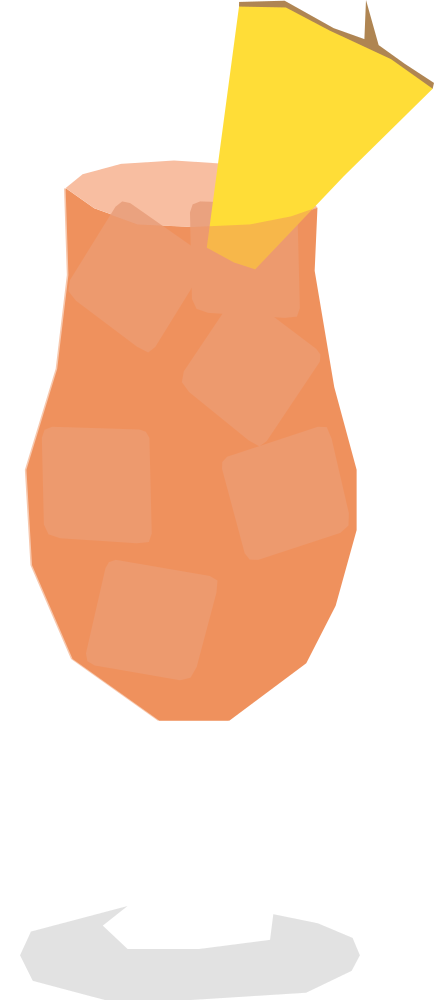

¿Cómo te saludo?
El Bula toma su nombre de una de las palabras más conocidas de Fiji: bula, una expresión que significa “hola”, “bienvenido” y que también se utiliza para transmitir buenos deseos. El cóctel combina ron y sabores tropicales como guayaba, naranja y maracuyá, evocando el ambiente y la hospitalidad de las islas.
RECETA
- 45 ml ron añejo
- 60 ml néctar de guayaba
- 30 ml jugo de naranja
- 7.5 ml jarabe de maracuyá
- 5 golpes de bitters tiki
- Hielo triturado
- Pedazo pequeño de piña
- Agrega todos los ingredientes a una coctelera con hielo triturado.
- Agita ligeramente.
- Vierte directamente en el vaso junto con el hielo.
- Sumergir un palo de madera tipo dawa en miel y colocarlo en el coctél para seguir mezclando
- Decora con un pedazo de piña en el borde del vaso
Vaso: Tiki mug o vaso alto